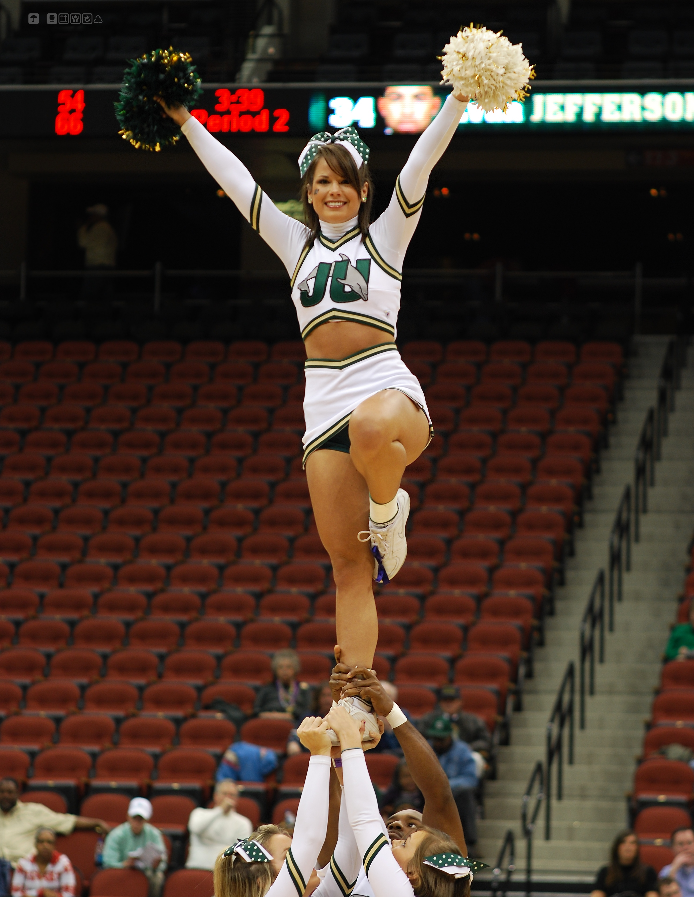

Proper Techniques
The flyer should always make sure they are staying stiff while in the air to ensure that they don’t fall. Also, the flyer should know how to properly come down from there stunt. In addition, bases and backspot should know how to catch the flyer before attempting a stunt. When going up to prep or extension, the flyer should be stiff and put there legs straight and look forward so that they don’t risk falling. Also, the bases should be looking at eachother to make sure they’re going up at the same time. Overall, all of the people involved in the stunt must do their part, or the outcome will most likely not come out good.
